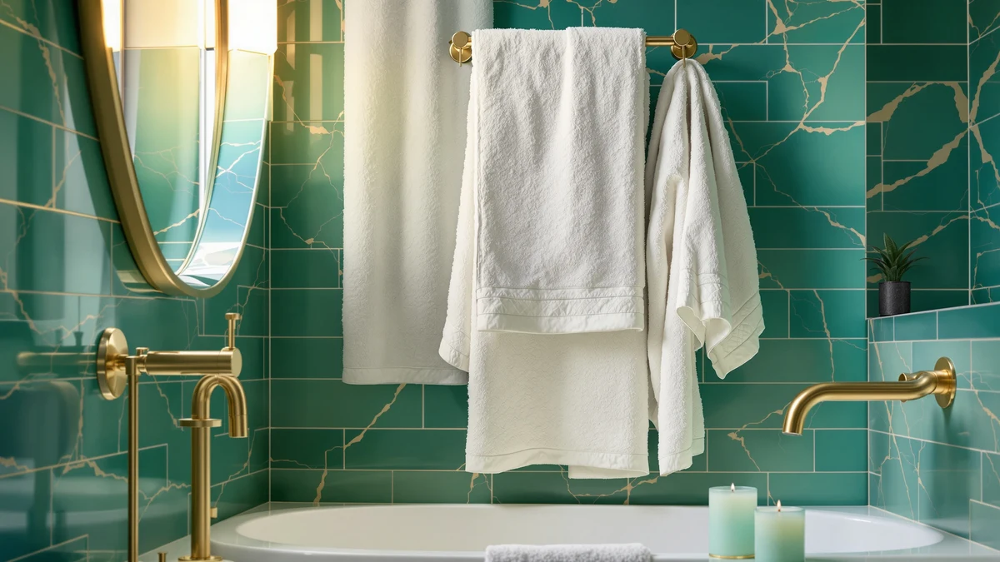

How to Fold Bath Towels Like a Hotel: 4 Easy Methods (2026)
Prices and picks verified as of August 2026. Independent, reader-supported reviews.


Things to Know Before You Buy
- Fold only fully dry towels. A towel folded while even slightly damp traps moisture between the layers and can smell musty within a day.
- Match the fold to where it lives. A tri-fold-in-thirds pattern suits an open shelf, while a simple in-half fold suits a slim towel bar.
- Face the smooth edge out. Hotels always show the finished, non-seamed edge on a stack, and that one detail is most of what makes a pile look tidy.
- Heavier towels hold a fold better. A 600 GSM or higher towel keeps a crisp line, while a thin, low-GSM towel tends to slump and lose its shape.
- A few extra minutes pay off. Learning how to fold bath towels correctly the first time saves you from redoing a lopsided stack later.
Learning how to fold bath towels the way a hotel does turns a plain linen closet into something that looks curated instead of crammed. The technique itself takes no special skill and no extra tools, only a flat surface and a consistent pattern you repeat every time.
The five steps below cover the full process, from drying the towel correctly to the finishing fold that hides seams and squares off corners. Along the way you get three finishing options, a tight hotel tri-fold for a shelf, a quick in-half fold for a towel bar, and a rolled version for a basket or open display, so you can match the method to your bathroom instead of forcing one style everywhere.
What You'll Need
- Supplies: clean, fully dried bath towels; wool dryer balls or fabric softener (optional); shelf or drawer liner (optional)
- Tools: a flat folding surface such as a bed or table; an iron or garment steamer (optional)
Step 1: Dry the towel completely first
Before you fold anything, run a hand over the towel to check that it is dry all the way through instead of just dry to the touch on the surface. Terry cloth holds moisture deep in the loops, and a towel that feels dry on the outside can still be damp near the center seam.
If the towel came out of the dryer with the load overcrowded, give it a short extra tumble on its own with a couple of wool dryer balls. That extra few minutes fluffs the pile back up and makes the next fold sit flatter and straighter than it would on a flattened, static-clung towel.
Step 2: Lay the towel flat and square the corners
Spread the towel out on a bed, table, or countertop with the long side facing you. Smooth out any twists or bunching so the fabric lies flat, then pull each of the four corners until they line up into a clean rectangle.
This step is the one most people skip, and it is also the reason a folded stack ends up crooked. A towel that starts square holds every fold line straight after it, while a towel that starts lopsided stays lopsided no matter how carefully you fold from there.
Step 3: Fold in thirds lengthwise for the hotel base
Take the long left edge and fold it in toward the center, covering roughly a third of the towel. Then take the right edge and fold it over the top so it lines up evenly with the left edge underneath, leaving a long, even strip about a third of the original width.
This lengthwise tri-fold is the base of the classic hotel look, and it works because it hides the raw side edges inside the fold instead of leaving them exposed. Keep the edges flush as you go. A half-inch of overhang on one side is the detail that makes a stack look homemade instead of hotel-neat.
Step 4: Fold crosswise into thirds, or in half for storage
With the long strip in front of you, fold one end in toward the middle, then fold the other end over on top of it, mirroring the lengthwise fold from step three. That gives you a compact rectangle with clean edges on every side, the finish you see on a hotel bathroom counter.
If you are folding a stack for daily family use rather than for display, a single fold in half from end to end works nearly as well and takes half the time. Save the full crosswise tri-fold for towels that live somewhere visible, and use the faster half-fold for towels headed straight into a drawer.
Step 5: Turn the finished edge out and stack, roll, or display
Rotate the towel so the smooth, seamless edge faces the front of the shelf and the folded edges with the raw seams stay hidden toward the back. That single move is what separates a folded stack that reads as intentional from one that reads as thrown together.
From here, stack towels by size with the largest on the bottom for a stable pile, or roll each one from end to end and stand it on its side in a basket for a spa-style display. Either finish works. Pick the one that matches your bathroom instead of forcing a rolled look onto a narrow shelf built for flat stacks.
Common Mistakes to Avoid
The biggest mistake in how to fold bath towels correctly is folding one that is not fully dry. A towel that goes onto the shelf even slightly damp traps humidity between its layers, and within a day or two the whole stack can pick up a musty smell that no amount of fabric softener fixes. Always confirm the towel is dry through its full thickness instead of just on the surface before you start.
Skipping the corner-squaring step is another common one. A towel folded from a twisted or crooked starting position never straightens out, and every fold after that first one locks in the crooked edge. Take the extra ten seconds to line up the corners before you fold.
People also tend to iron towels on high heat to get a crisp fold, which flattens the terry loops and makes the towel less absorbent over time. If you want a pressed look, use a low setting or a garment steamer instead, and save the iron for the fold lines only, not the whole towel.
Overstuffing a shelf is the last mistake worth naming. Cramming too many towels into a tight space crushes the folds flat and makes even a perfect hotel fold look sloppy within a week. Leave a little breathing room, and the stack holds its shape far longer.
Our Top Picks
A crisp fold holds up longer on a towel with enough weight and structure to keep its shape. These three towels held a tight fold well across the specs and owner reviews we compared, which makes the hotel look easier to keep up day to day.

Editor's Pick
Cleanbear Bath Towels Soft Shower
Cleanbear's ringspun cotton pile holds a tight tri-fold without slouching, and the price makes it easy to buy enough towels to keep a full shelf looking uniform.
$29.99
Check Price on Amazon
Best Value
Jacquotha Black and Ivory Striped
The striped border on this Jacquotha set hides fold lines well, so the stack still looks sharp on a day you skip pressing the edges.
$35.90
Check Price on Amazon
Premium Choice
Jacquotha Waffle Bath Towels 2-Piece
A waffle weave holds its shape once folded and adds texture to a stack, which is why we point to this pick when you want a spa look instead of a plain hotel fold.
$41.99
Check Price on AmazonFrequently Asked Questions
What is the best way to fold a bath towel like a hotel?
Lay the towel flat, fold it in thirds lengthwise, then fold that strip into thirds again from end to end. That double tri-fold is the classic hotel look, and it holds its shape better than a simple in-half fold.
Should I fold or roll bath towels?
Fold towels for a shelf or closet stack, and roll them for a basket or an open display. Rolling saves a little space and shows off texture, while folding stacks more evenly and stays put on a flat shelf.
How do you fold a bath towel to save space?
Fold the towel in half lengthwise, then roll it tightly from one short end to the other. A rolled towel takes up less shelf depth than a flat folded stack, which helps in a small linen closet or on a narrow bathroom shelf.
Why do hotel towels always look so neat?
Hotel housekeeping staff use a consistent fold and always turn the smooth, seamless edge to face out, and they use towels heavy enough to hold that shape. The pattern itself is simple; the consistency is what makes it look polished.
How often should I refold towels in the linen closet?
Refold a stack whenever it gets pulled apart and restacked unevenly, which for most households is every week or two. A quick refold keeps the pile square and stops folds from creasing permanently into the fabric.
Verdict
Once you know how to fold bath towels the hotel way, the technique takes less time than it looks like it should. Dry the towel fully, square the corners, fold it into thirds twice, and turn the finished edge out. Repeat that same pattern on every towel and a mismatched linen closet turns into a stack that looks the same from one shelf to the next.
The fold matters less than the towel underneath it, though. A thin, low-GSM towel slumps no matter how carefully you fold it, while something with real weight and a tight weave, like the Cleanbear set we point to above, holds its shape through a week of daily use. Pair a good fold with a towel built to keep it, and the hotel look sticks around instead of falling apart by the next wash.